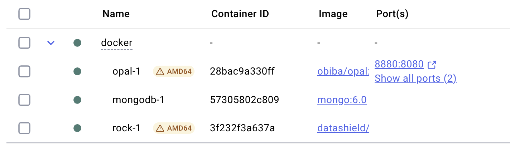

vignettes/deploy-local-datashield-server-with-opal.Rmd
deploy-local-datashield-server-with-opal.RmdThis tutorial starts a local DataSHIELD server with Docker, so you can try dsROCrate (or anything else that talks to DataSHIELD) without touching a production system. It uses Opal, the data repository developed by OBiBa and the reference implementation of the DataSHIELD infrastructure.
Local testing only: the accounts and passwords below are public defaults. Never expose this deployment to a network, and change them if you reuse it for anything else.
We assume Docker is installed and configured on your computer; if not, see Get started with Docker.
The easiest option is to clone FederatedMethods/datashield_dev_install,
which has a step by step guide and a ready to use docker-compose.yml.
On Linux or macOS:
git clone https://github.com/FederatedMethods/datashield_dev_install
cd datashield_dev_install/docker
docker compose up -dIn the Docker GUI you should see something like the following:

The docker-compose.yml file defines two accounts (you
can change them by editing the variables
OPAL_DEMO_USER_NAME and
OPAL_DEMO_USER_PASSWORD):
| Account | Password | Used for |
|---|---|---|
administrator |
password |
Logging in to the Opal web interface; auditing with dsROCrate |
dsuser |
P@ssw0rd |
Running DataSHIELD analyses (the user whose activity is audited) |
In a web browser, go to http://localhost:8880
and log in as administrator.
In RStudio (or your preferred IDE), connect to the server from R:
con <- opalr::opal.login(
username = "administrator",
password = "password",
url = "http://localhost:8880"
)
print(con)You should see something like:
dsROCrate requires Opal 5.7.2 or later (6.0 or later
to capture RESOLVE operations in the outputs). If the
version shown is older, update the Opal image in
docker-compose.yml.
The containers also expose HTTPS on port 8843. That endpoint usually uses a self-signed certificate, which R clients may reject unless certificate verification is relaxed, so we use plain HTTP on port 8880 for local testing.
(Optional) Run some commands as dsuser with
{dsBaseClient}. This also creates activity in the server
logs, which the audit in the next section will find:
# registers the OpalDriver class in the current session
DSOpal::Opal()
# create the login object
builder <- DSI::newDSLoginBuilder()
builder$append(
server = "study1",
url = "http://localhost:8880",
user = "dsuser",
password = "P@ssw0rd",
driver = "OpalDriver"
)
conns <- DSI::datashield.login(logins = builder$build())
# assign a table to the symbol `test`
DSI::datashield.assign.table(
conns["study1"],
symbol = "test",
table = "CNSIM.CNSIM1",
errors.print = TRUE
)
dsBaseClient::ds.ls(datasources = conns["study1"])
dsBaseClient::ds.summary("test", datasources = conns["study1"])
DSI::datashield.logout(conns)With the connection con from step 3.2:
dsROCrate::check_permissions(con, verbose = TRUE)
crate <- dsROCrate::audit(
con,
project = "CNSIM",
tables = "CNSIM1",
user = "dsuser"
)
dsROCrate::report(crate, title = "Local DataSHIELD audit")
opalr::opal.logout(con)See vignette("getting-started", package = "dsROCrate")
for what these functions do, and
vignette("audit-permissions", package = "dsROCrate") to
create a dedicated auditor account instead of using
administrator.